From your very first launch to the exported PDF report. Start with the two-minute quick start; the rest of the guide goes through every screen in detail. Screens shown are from the iPhone app; Android is the same.
Quick start: your first answer in 2 minutes
You only need three numbers to get a first answer: what the asset costs, how much you have for a deposit, and your monthly income and spending. Everything else in the app makes the answer more accurate or lets you explore it.
- Accept the notice. The first time you open the app it shows a short disclaimer. The calculator gives estimates, not financial advice. Tap Accept.
- Tap the ⚡ button on the Loan tab and type the asset value and your deposit. The loan amount fills in by itself.
- Go to Budget and add your income and your regular spending.
- Open What If. The Answer tab tells you, in one line, whether it is affordable and how much you would have left each month.
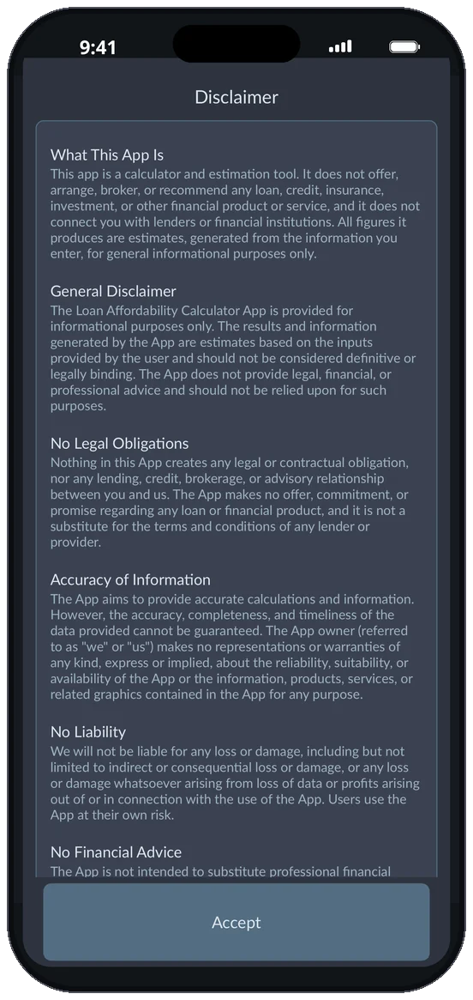
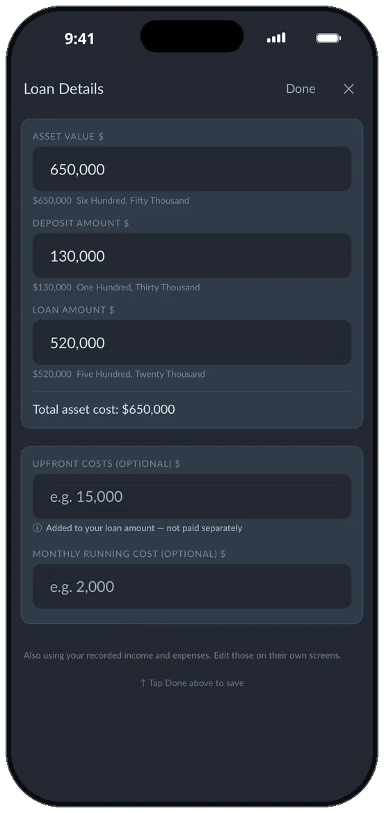
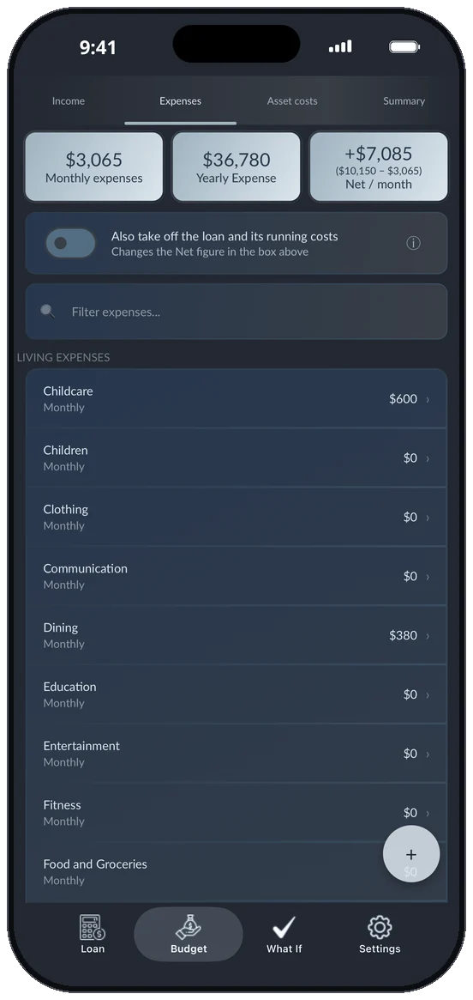
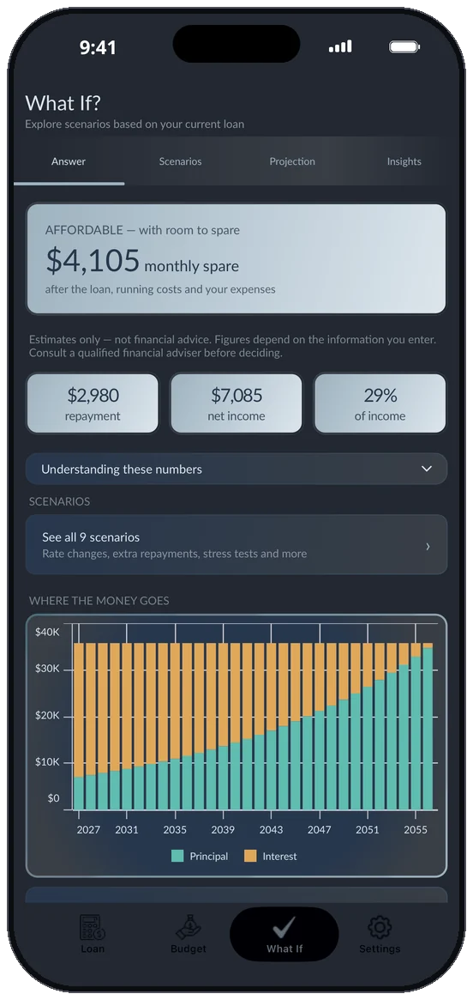
The examples in this guide use one household: a $650,000 asset, $130,000 deposit, a 30-year loan at 5.5%, income of $10,150 a month and spending of $3,065 a month. Your figures will differ. Screens are captured step by step, so a figure can change as more is entered; the text says when.
The big picture
The app answers one question in four layers. Each tab is one layer, and each feeds the next:
- Loan works out what you would borrow and what it would cost to repay.
- Budget records what you earn, spend, and what the asset will cost to keep.
- What If compares the two: is the repayment affordable, and what would change that?
- Insights and the PDF turn all of it into a summary you can keep or share.
1. The Loan tab: what you would borrow and repay
Everything else in the app starts here. The loan is the single biggest commitment in the picture, so these figures drive the repayment, the affordability verdict and every scenario. Getting them right first makes everything after it right.
Step 1: enter the asset value and deposit
Tap the ⚡ button (or tap any of the asset, deposit or loan figures). The Loan Details page opens. This is the only place you type these three figures; elsewhere they are shown but not edited.
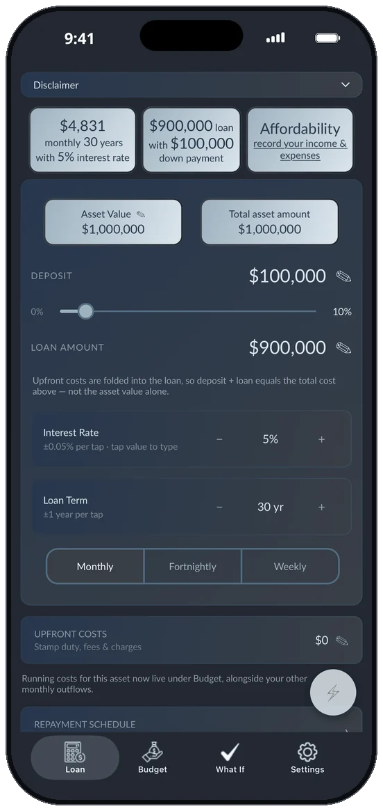
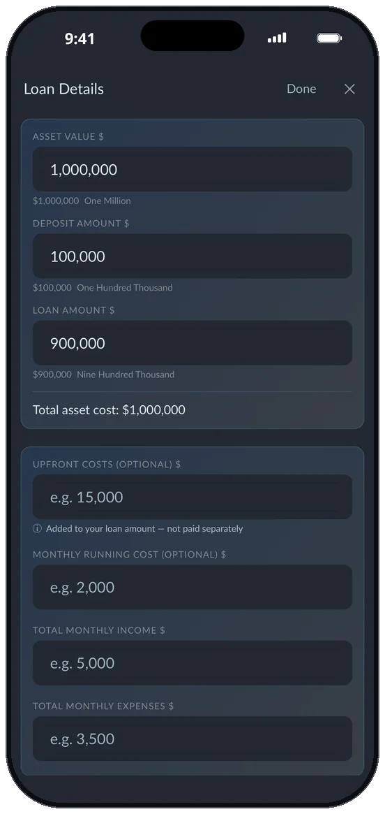
The three figures are linked: asset value = deposit + loan. Change the deposit and the loan moves; change the loan and the deposit moves. Whichever you edited last wins. Each field also spells the number out in words underneath, so a stray zero is easy to spot. Tap Done when you are finished.
Fields for upfront costs, running cost, income and expenses appear on this page while they are still empty, so a new user can fill everything in one go. Once a value exists they disappear, and you edit them where they live (Upfront Costs on the Loan tab; income and expenses in Budget). A small note on the page tells you which values are already being used.
Step 2: read the overview
The three boxes at the top are the headline: the repayment (and how often), the loan amount with the deposit it assumes, and an affordability box that stays as a prompt until you have recorded income and expenses, then shows your estimated monthly position. Below them are the asset value, the total asset amount (asset plus upfront costs), and a slider for the deposit.

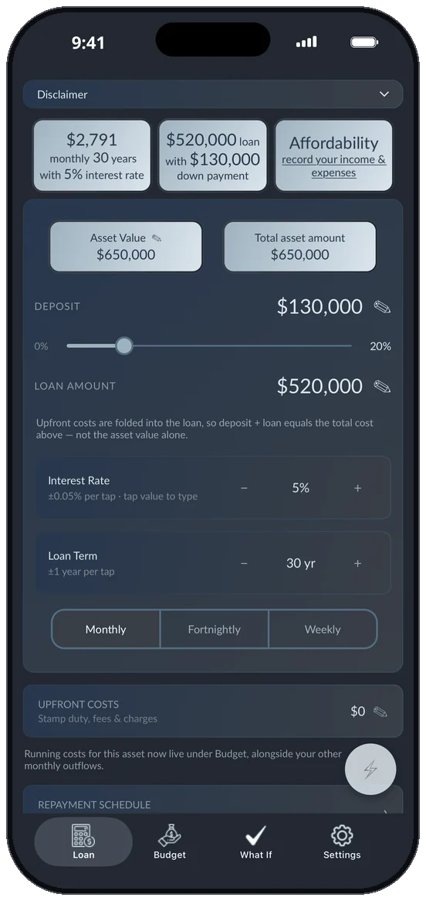
The repayment is a standard amortising-loan figure: a fixed payment, set from the loan amount, the interest rate for each period and the number of periods, so that the loan is exactly paid off at the end of the term. Each payment is split: first the interest on what you still owe, and the rest reduces the loan. Because the balance falls, the interest part shrinks and the principal part grows over time.
Step 3: set the interest rate, term and frequency
- Interest Rate – tap − / + to move in small steps, or tap the figure and type an exact rate. The step size is set in Settings. A rate that is even half a percent out changes the repayment noticeably, so use the rate you have actually been quoted.
- Loan Term – the number of years. A longer term lowers each repayment but increases the total interest.
- Monthly / Fortnightly / Weekly – how often you repay. The repayment box switches to that frequency immediately.
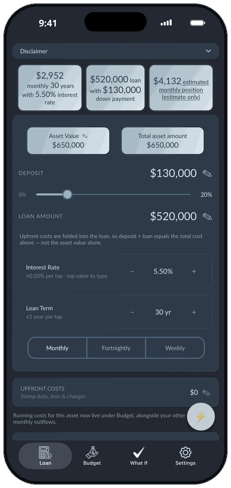
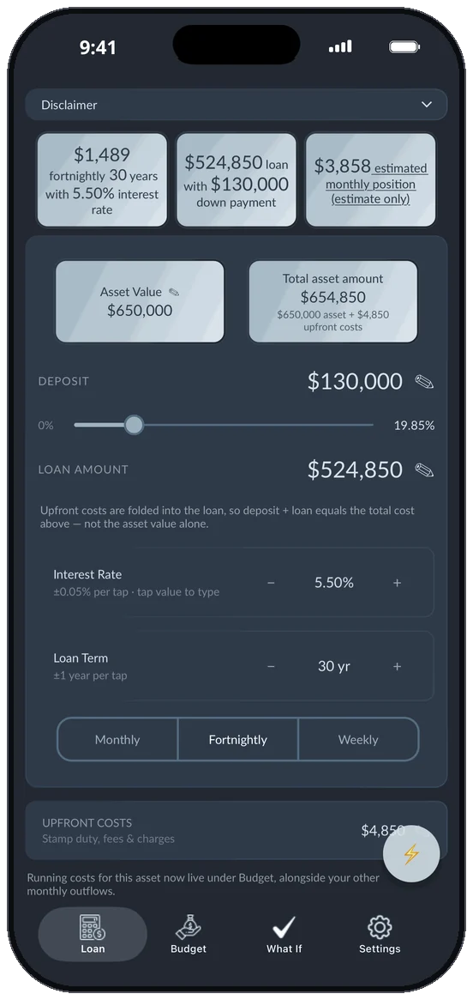
Fortnightly and weekly repayments are shown as the amount you hand over each time, so they are smaller than the monthly figure. The What If tab shows what paying this way is really worth.
Step 4: add upfront costs
Buying costs more than the price tag: legal fees, bank fees, inspections and other one-off items. Leaving them out understates the loan. The app adds them to the loan, not to your deposit, so the deposit stays equal to the money you actually have.
Open Upfront Costs and fill in whatever applies. Here: conveyancing $1,800, bank fees $600, inspection $450 and other $2,000, which totals $4,850.
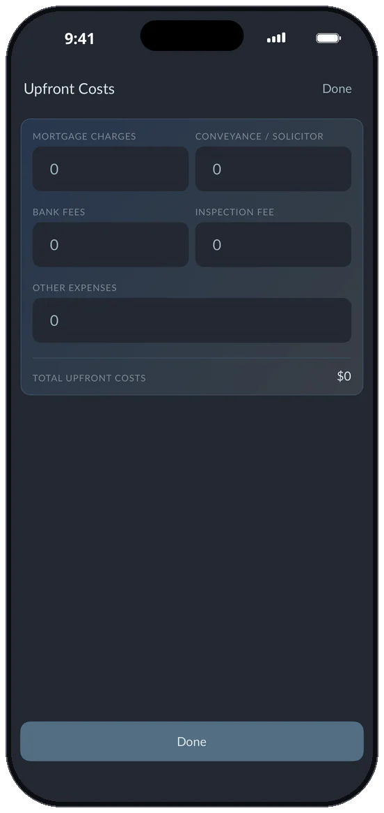
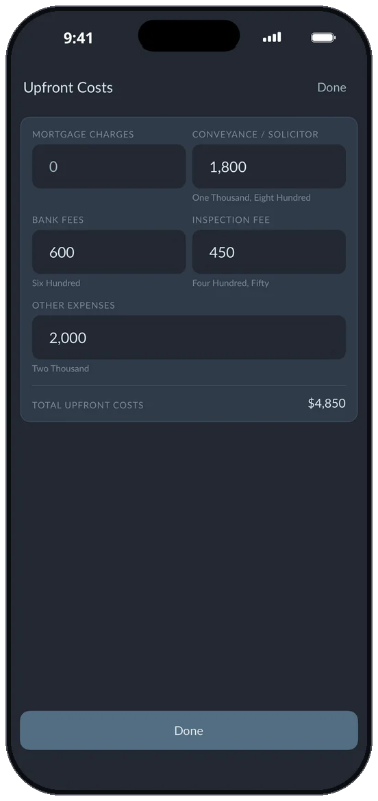
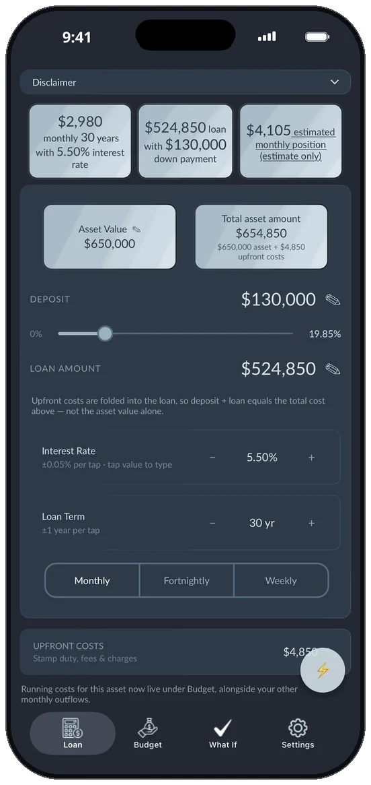
Total asset amount = asset value + upfront costs ($650,000 + $4,850 = $654,850). Loan = total asset amount − deposit ($654,850 − $130,000 = $524,850). The repayment is then recalculated on the larger loan. Raising a cost always grows the loan and leaves your deposit alone.
Step 5: look at the repayment schedule
It shows where your money actually goes, year by year. Most people are surprised by how much of the early repayments is interest. Seeing it is what makes the extra-repayment and rate scenarios later in the guide make sense.
Open Repayment Schedule for a chart and a year-by-year table: the interest and principal paid each year, and the balance still owed. Tap a row to expand the years.
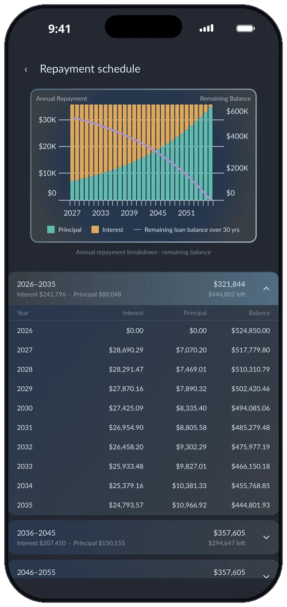
The bars are the repayments for each year, split into principal and interest; the line is the remaining balance. Early on the bars are mostly interest; the crossover marks where the loan starts to fall faster. Tap the Disclaimer bar at the top of the tab at any time to re-read the notice.
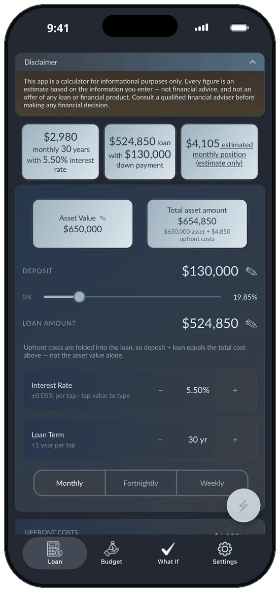
2. The Budget tab: what comes in, what goes out
A repayment on its own means nothing. $2,980 a month is easy for one household and impossible for another. The Budget tab records the other half of the picture, so the app can tell you what is left over after the loan.
Budget has four sub-tabs: Income, Expenses, Asset costs and Summary. Entries save automatically, and the other tabs pick them up the next time you open them.
Income
Tap the round + button. Give the income a name, an amount and how often you receive it: weekly, fortnightly, monthly or yearly. The app converts each source to a monthly and a yearly figure, so sources paid on different schedules can be added together fairly. Tap a row later to edit or delete it.
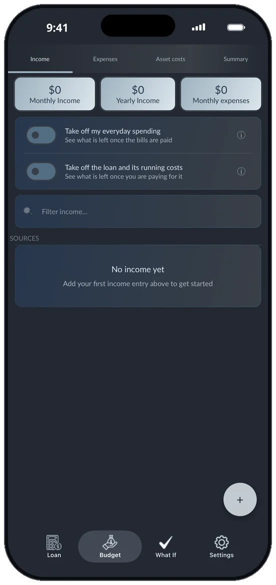
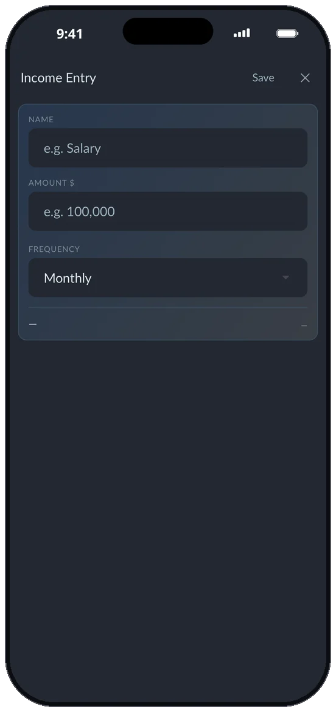
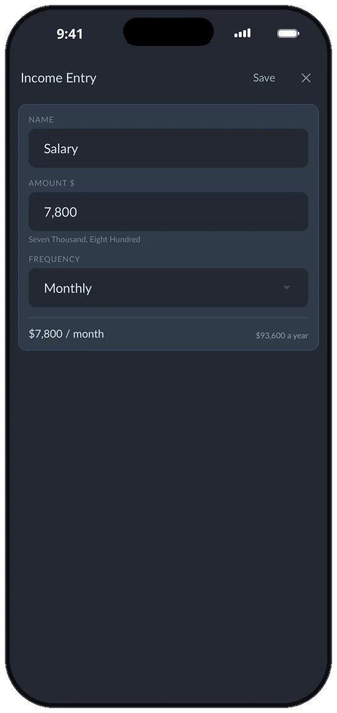
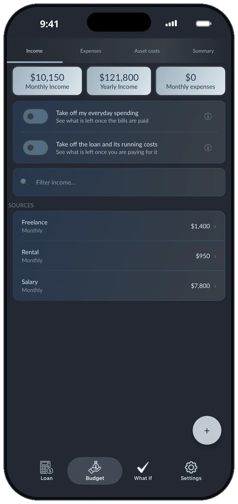
Use the amount you actually receive. Take-home pay gives a more honest answer than gross pay. The three boxes at the top show monthly income, yearly income and monthly expenses; they recalculate as you add and remove rows.
The two switches
The switches at the top decide what "left over" means:
- Take off my everyday spending – income minus your regular spending: what remains once the bills are paid.
- Also take off the loan and its running costs – the same, minus the repayment and asset costs: what remains once you are paying for the asset.
Tap the ⓘ for a longer explanation in the app.
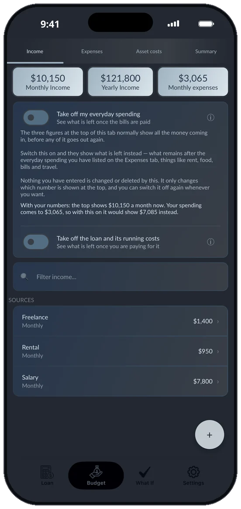
Expenses
The same idea, with ready-made categories (Groceries, Utilities, Transport, Insurance, Childcare and more). Add an amount to the categories that apply; the rest stay at $0. A category can hold more than one entry, so a person can list several insurance policies separately.
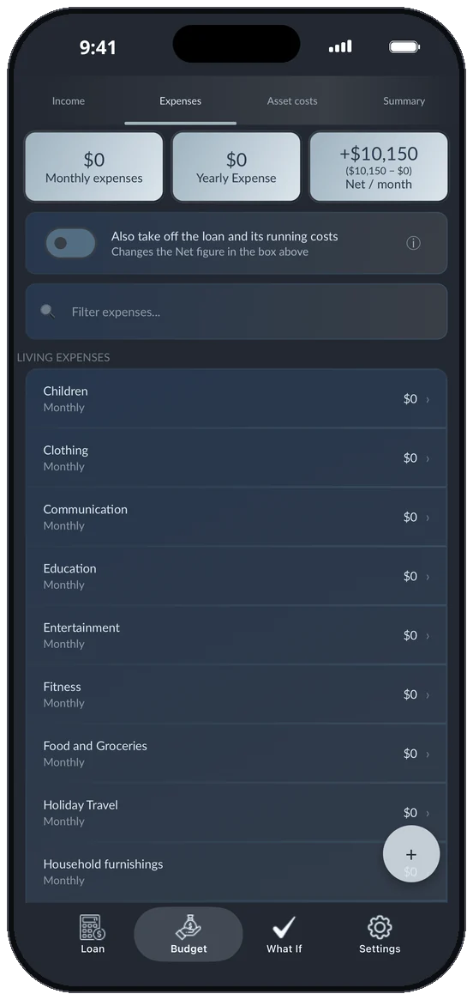
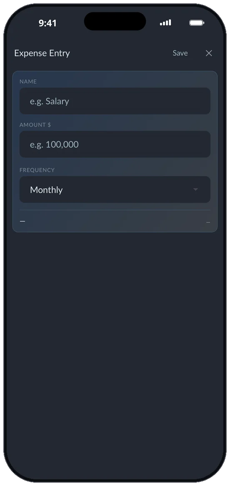
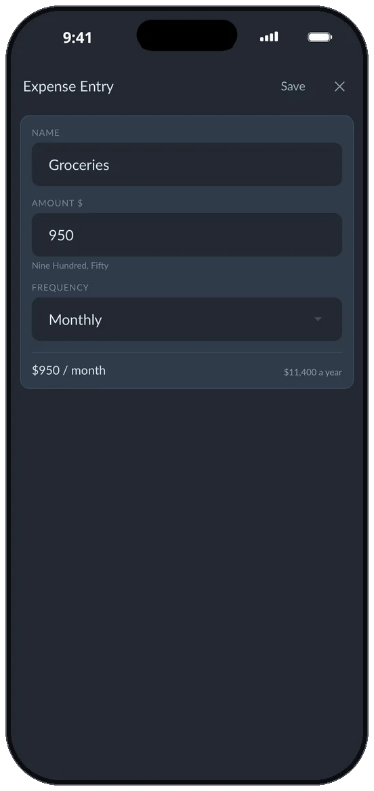
Be realistic here. The affordability answer is only as honest as your spending figures, and the stress test in What If depends on them directly. Occasional costs (annual insurance, holidays) can be entered with a yearly frequency; the app turns them into a monthly share.
Asset costs
Owning an asset costs money after you buy it: rates and taxes, maintenance, insurance, running costs. These are ongoing, unlike upfront costs, and they add to the repayment as a real monthly cost of ownership.
Tap +, name the cost, give an amount and a frequency. A yearly cost is converted to a monthly share, and a weekly cost to a monthly equivalent.
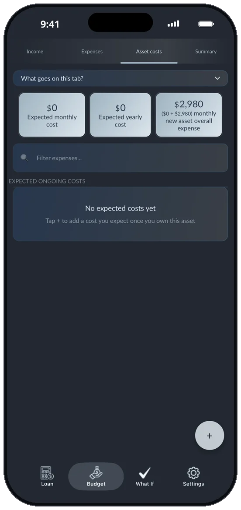
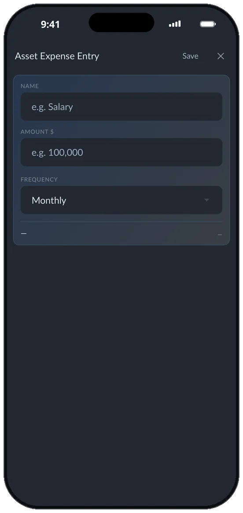
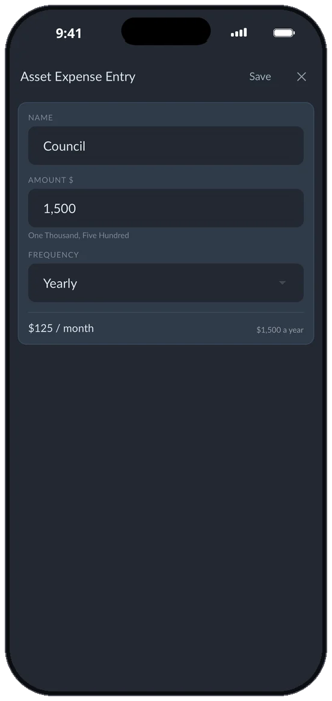
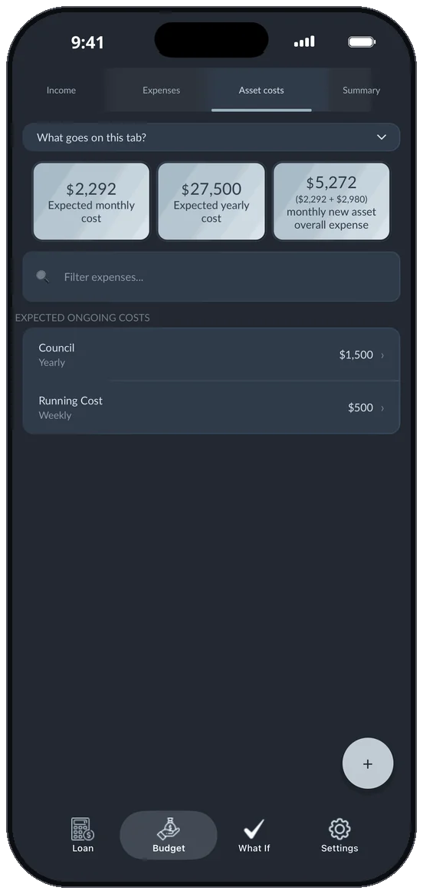
The asset costs shown above were added afterwards as an example, so most other screens in this guide were captured before them and show $0 asset costs. When you enter them, your monthly position falls by the same amount (compare the £ screen later, where the position is lower because of them).
Monthly cost of owning = loan repayment + asset costs (each converted to a monthly amount). A $1,500 yearly cost counts as $125 a month; a $500 weekly cost counts as about $2,167 a month.
Summary
One page that brings it together: money in, money out and what is left, with a doughnut chart and a breakdown by category. It is the quickest way to sanity-check your entries.
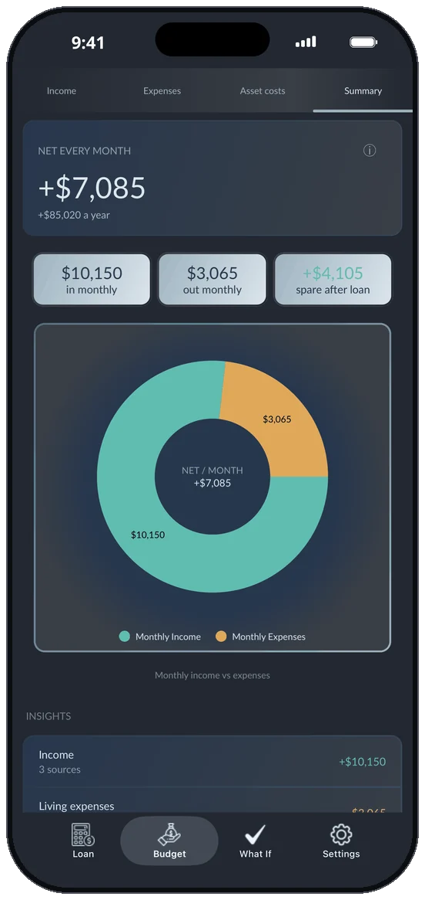
Net every month = income − expenses ($10,150 − $3,065 = $7,085). After the loan = net − repayment ($7,085 − $2,980 = $4,105). The percentage shown is the repayment as a share of your income.
3. The What If tab: is it affordable, and what would change that?
This is where the loan and the budget meet. The tab turns your figures into a verdict, then lets you test the plan: what if rates rise, what if you pay extra, what if you borrow less. Learning how your loan behaves under change is more valuable than the single number it starts with.
Answer
The verdict in one box (for example Affordable, with room to spare) and the amount left each month after the repayment, running costs and spending. Below it: the repayment, your net income, and the repayment as a share of income. Lenders usually look at that last figure.
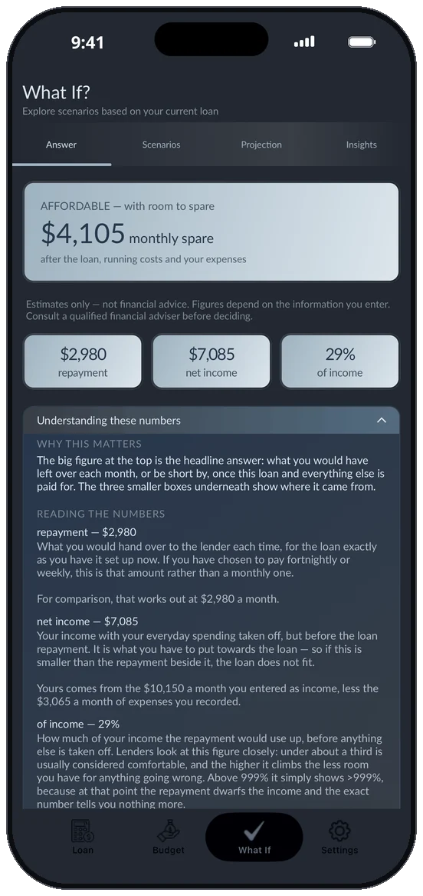
Monthly spare = income − expenses − repayment − asset running costs. The verdict compares that spare amount, and the repayment's share of income, against rules of thumb. A very high share, or a spare amount near zero, moves the verdict from Affordable towards Tight or Stretched. It is an estimate based on your entries, not a lender's decision.
The nine scenarios
Each scenario changes one part of your plan and shows the effect, side by side with where you are today. Tap one to open it; each has controls at the top, results below, and an Understanding this scenario panel in the app that explains the same points in more detail.
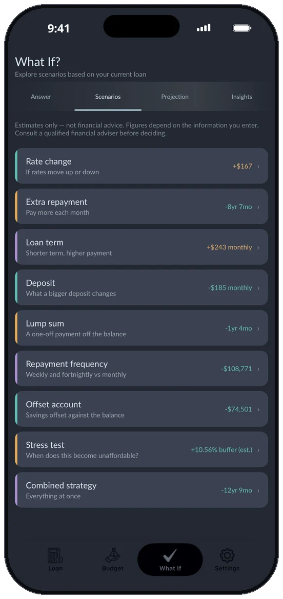
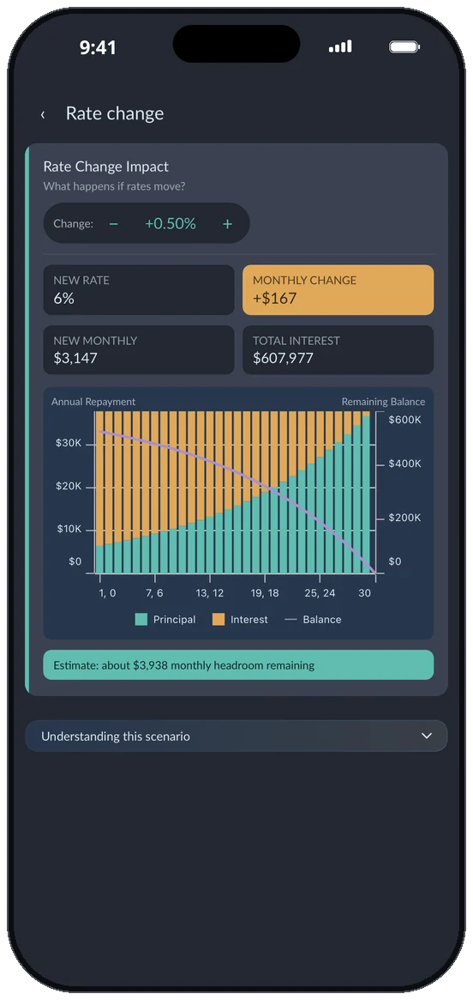
1. Rate change
What it is. Interest rates move, and your rate is the one number on a loan you do not control. This shows what a rise or fall does to the repayment and to the total interest.
How to use it. Use − and + to dial in a change (for example +0.50%). Larger tests, such as +2% or +3%, are closer to what has happened historically than half a percent.
The figures
- New rate – your rate plus the change
- Monthly change – how much more (or less) you pay each month
- New monthly – the repayment at the new rate
- Total interest – interest over the whole term at the new rate
- The chart – each bar is a year, split into principal and interest; the line is the balance still owed
- The banner – how much room is left against your income and expenses
A +0.50% change on this loan lifts the rate to 6%, adds about $167 a month and takes total interest to about $607,977. A small monthly change becomes a large cost over 30 years, which is why it is worth seeing before you commit. The monthly change is the figure to compare with your spare money each month.
Unless your rate is fixed, a lender can move it at any time, and a fixed period ends.
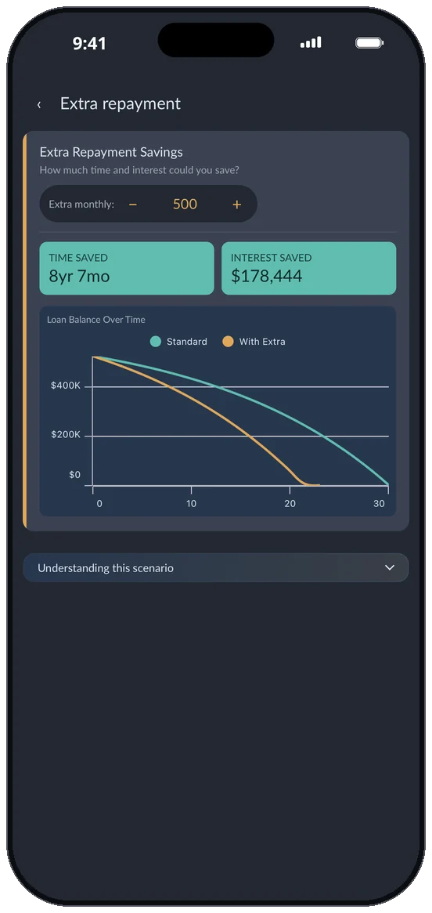
2. Extra repayment
What it is. Paying a little more than you have to each month. Every dollar of the extra goes straight to the balance, so none of it is spread over interest.
How to use it. Set an extra monthly amount with − and +.
The figures
- Extra per month – what you add on top of the required repayment
- Time saved – how much sooner the loan is paid off
- Interest saved – interest you will never be charged
- The chart – two lines: what you owe at your current repayment, and with the extra. The widening gap is the extra compounding
An extra $500 a month on this loan finishes it about 8 years 7 months earlier and saves around $178,444 of interest. The saving appears because the lower balance is charged interest each month, so the benefit grows with every month the extra is paid.
Check your lender accepts extra repayments without a fee; some fixed-rate loans cap or charge for them. Keep an emergency fund first: money paid onto a loan is much harder to get back.
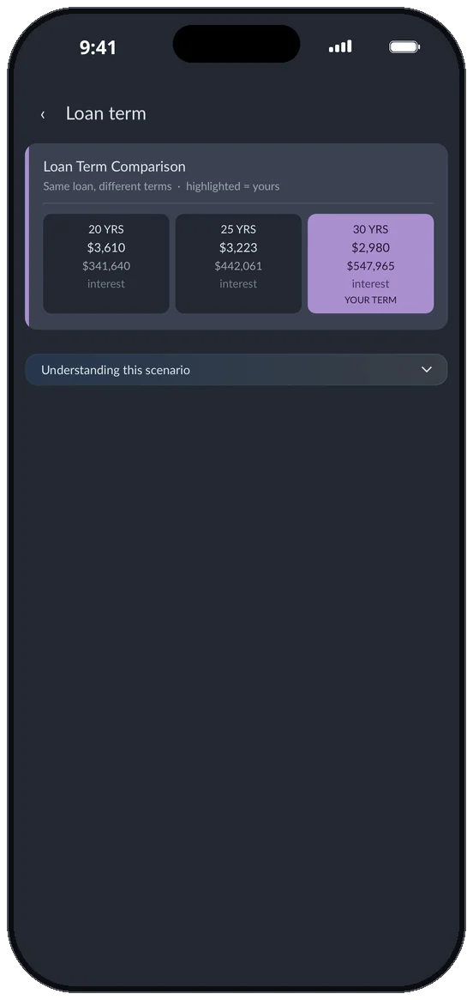
3. Loan term
What it is. The term sets a trade-off: a longer loan makes every month easier and the loan as a whole more expensive.
How to use it. Nothing to enter. Three terms are shown side by side, and the column marked YOUR TERM is the one you have now.
The figures
- The three columns – the same loan over a different number of years
- Monthly – what you hand over each month on that term
- Interest – total interest over that term, the real price of the extra years
Compare the monthly figure against your spare income, and the interest figure against how much you want to pay overall. It shows exactly what you buy, and what you pay, for each extra five years.
The cheapest total is not automatically the right answer; a repayment you cannot sustain is worse than a longer loan. Many lenders let you overpay a long loan, which gives a short loan's cost with a long loan's safety net.
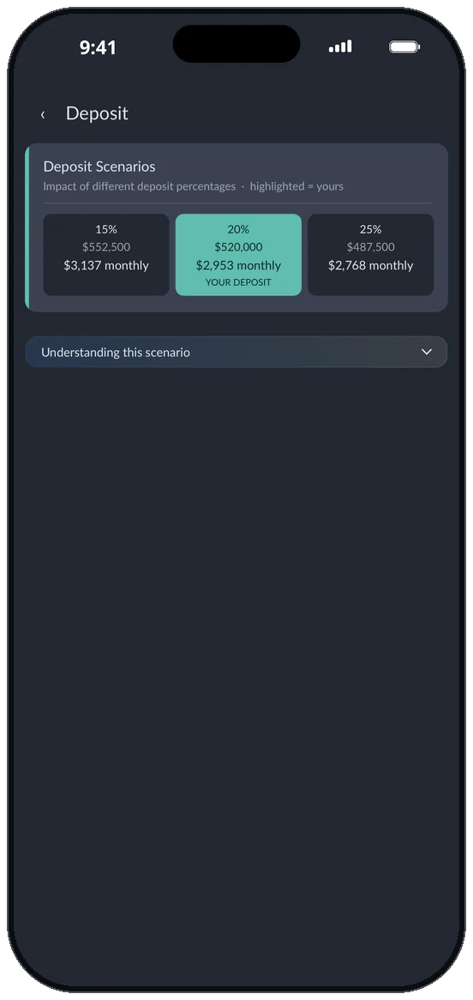
4. Deposit
What it is. Your deposit decides how much you borrow, and so both the repayment and the total interest.
How to use it. Nothing to enter. Three deposit levels are shown as a share of the asset price, and YOUR DEPOSIT marks where you are now.
The figures
- The three columns – different deposits, as a share of the asset price
- Loan – what you would borrow with that deposit
- Monthly – the repayment that loan implies
On this example, moving the deposit from 15% to 25% lowers the monthly repayment from about $3,137 to about $2,768. It shows what saving a little longer is worth, and what putting down less would cost every month afterwards.
Many lenders price by loan-to-value band, so crossing a threshold (often 80% or 90%) can cut your rate as well. This screen cannot model that, because the bands depend on your lender.
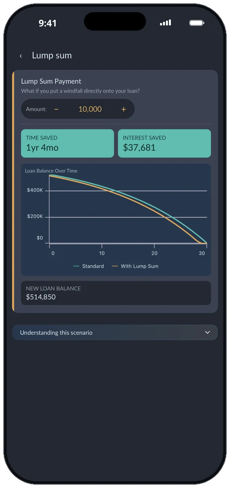
5. Lump sum
What it is. A single one-off payment onto the loan: a bonus, an inheritance, the proceeds of a sale.
How to use it. Set the amount with − and +.
The figures
- Amount – the one-off payment you are modelling
- Time saved – how much sooner the loan finishes
- Interest saved – interest you will never be charged
- New loan balance – what you owe right after the payment
- The chart – what you owe with and without the lump sum. The two lines never meet again
A $10,000 lump sum saves about 1 year 4 months and roughly $37,681 of interest on this loan, and leaves a balance of about $514,850. The same amount paid early is worth far more than paid late, because it reduces the balance that interest is charged on for every remaining year.
Check for early-repayment charges, common on fixed-rate loans. Compare against what the money could earn elsewhere, and against clearing any higher-interest debt first.
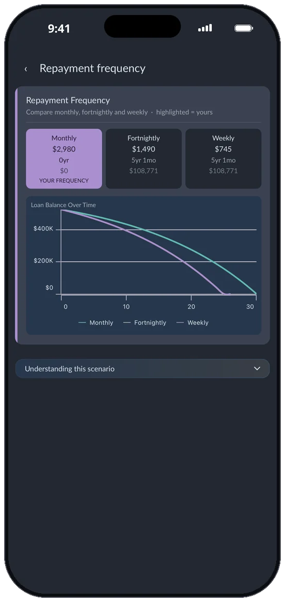
6. Repayment frequency
What it is. Paying fortnightly or weekly instead of monthly shortens the loan without feeling like paying more.
How to use it. Nothing to enter. Monthly, fortnightly and weekly are shown side by side; YOUR FREQUENCY marks how you pay now.
The figures
- Payment – what you hand over each time, not per month
- Time saved and interest saved – both measured against paying monthly
- The chart – one line per frequency, showing what you owe over time
A year holds 26 fortnights but only 12 months, so paying half the monthly amount every fortnight makes 13 monthly-equivalent payments a year instead of 12. That one extra payment goes entirely onto the balance. Weekly works the same way, so its saving is almost identical.
The saving comes from the extra payment, not the frequency itself. A lender that splits your monthly payment into 24 fortnightly halves gives you no benefit; confirm yours takes half the monthly amount 26 times a year.
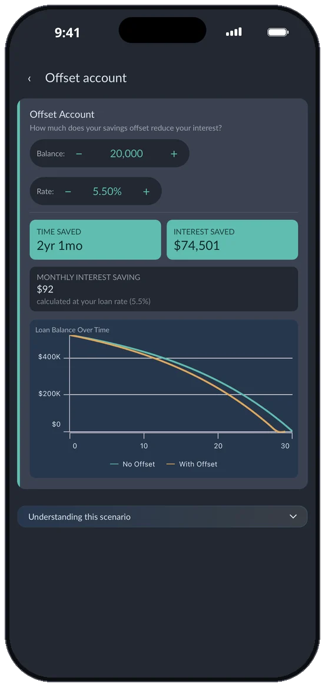
7. Offset account
What it is. An offset account is a savings or transaction account linked to your loan. Interest is charged only on the difference between the loan balance and the offset balance.
How to use it. Set the balance you would keep in the account, and optionally the rate at which the lender applies it. Leave the rate matching your loan rate for a full offset.
The figures
- Balance – how much you keep in the offset account
- Rate – models a lender applying the offset at a different effective rate
- Time saved – how much sooner the loan ends
- Interest saved – interest never charged
- Monthly interest saving – what the offset is worth this month at that balance
- The chart – what you owe over time, with and without the offset
A 600,000 loan with 20,000 in offset is charged interest on 580,000. On this loan, keeping $20,000 in offset saves about 2 years 1 month and $74,501 of interest. Your repayment does not change, so more of each payment reaches the balance, and that is what shortens the term.
An offset only helps while the money stays in the account. Weigh any account or package fee against the saving, and check whether the same money would earn more elsewhere after tax.
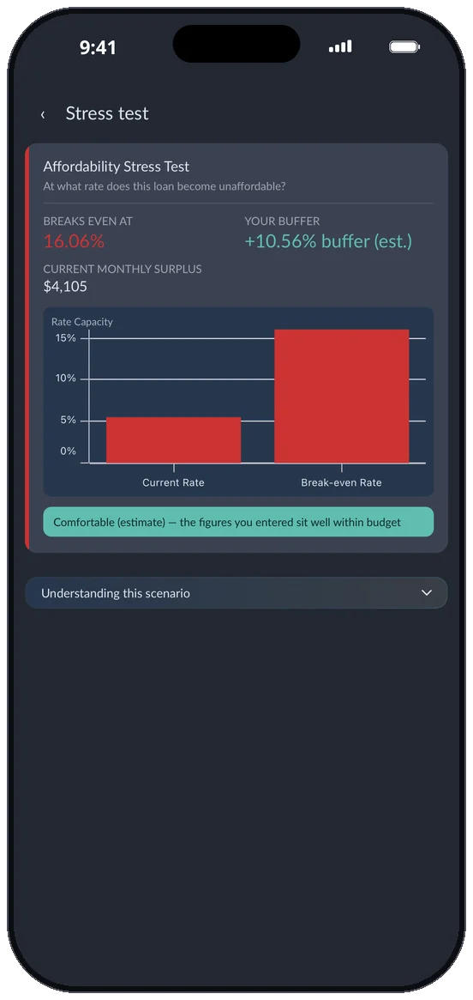
8. Stress test
What it is. Instead of asking what a particular rate rise costs, this asks the question in reverse: how far could the rate rise before this loan stops working on the income and expenses you entered?
How to use it. Nothing to enter; it uses your Loan and Budget figures. Fill both in first.
The figures
- Breaks even at – the estimated rate at which your repayment equals income minus expenses, leaving nothing over
- Your buffer – the gap between that rate and your current rate
- Current monthly surplus – income, minus expenses, minus the repayment you have now
- The chart – your current rate beside the break-even rate
- The banner – grades the buffer as comfortable, moderate or at risk
On this household the loan breaks even at about 16.06%, a buffer of roughly 10.56% above today's 5.5%, with a surplus of $4,105 a month. If you are still deciding how much to borrow, this is the most useful number on the page.
It is only as good as your entries: understate your spending and the buffer looks larger than it is. It also assumes income holds steady, which is often not what happens when rates rise.
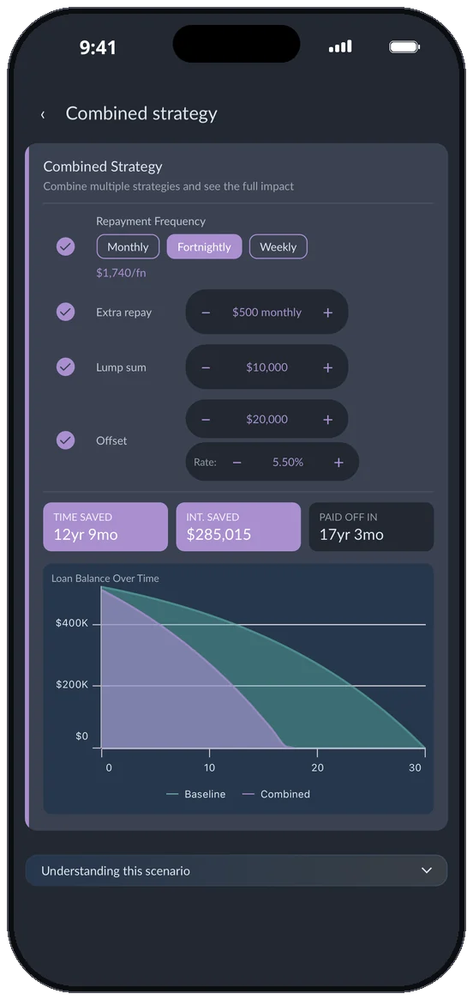
9. Combined strategy
What it is. Real repayment plans stack several things: paying fortnightly, adding a little extra, keeping savings in offset. This lets you switch them on together.
How to use it. Tick the strategies you want (frequency, extra repayment, lump sum, offset) and set their amounts. Everything below updates.
The figures
- The switches – turn each strategy on or off
- Time saved – how much sooner the loan finishes with that combination
- Interest saved – total interest avoided
- Paid off in – the term the combination produces outright
- The chart – your loan as it stands, against the combined strategy
The effects compound rather than simply add up. For this example, fortnightly payments with $500 extra, a $10,000 lump sum and $20,000 in offset together finish the loan in about 17 years 3 months instead of 30, and save around $285,015 of interest.
Check each piece is something you could keep up for years, not just this month. A modest plan you maintain saves more than an ambitious one you abandon.
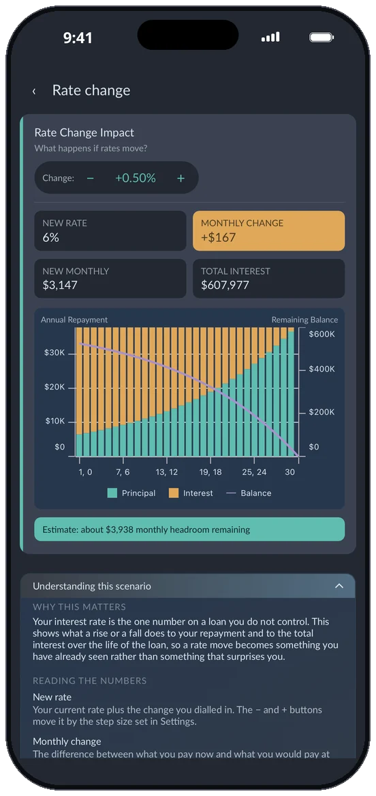
Projection
A loan lasts decades, but a budget is only a snapshot. The projection looks ahead over ten years so you can see whether income and spending are likely to stay in step as your circumstances change.
The chart shows projected income and expenses year by year, with a table beneath you can page through. Open Adjust the settings to set an annual growth rate for income and for spending, and choose whether to take off the loan and its costs.
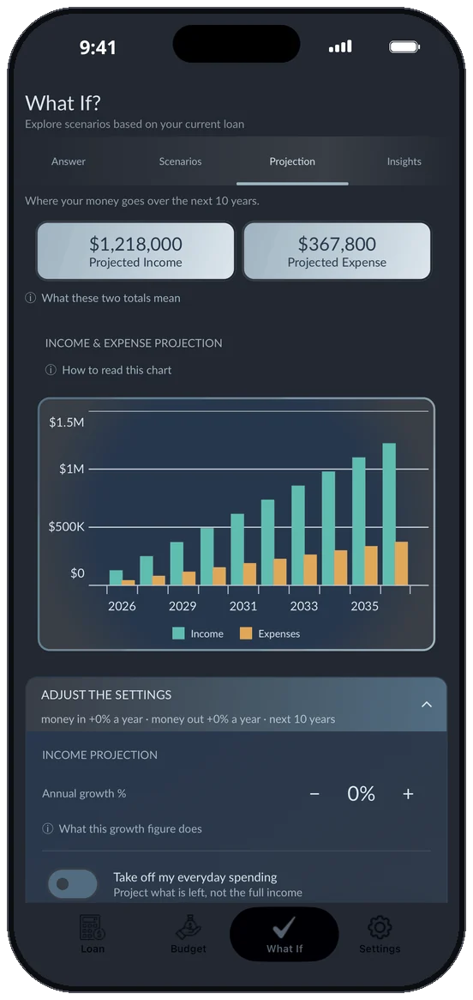
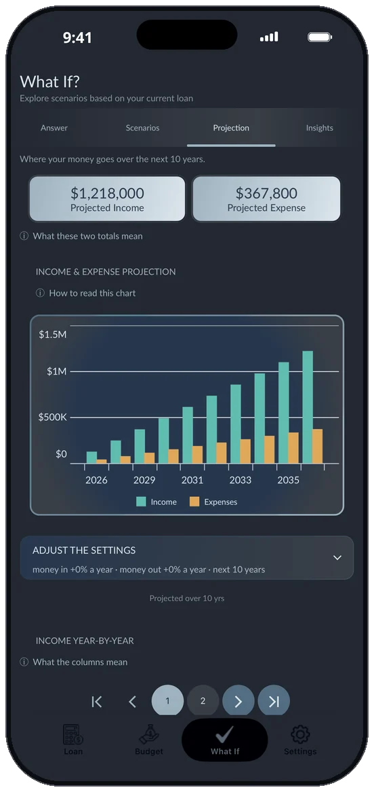
Each year's figure = last year's figure × (1 + growth rate). With 0% growth the projection is flat. Try a small positive growth for income and a similar rate for expenses to model inflation.
Insights
Plain-language summaries of your position in three groups: Key insights (affordability at a glance), Asset insights (purchase price, upfront costs, total) and Loan insights (what the bank is repaid in total, and the interest). It is also where the PDF export lives.
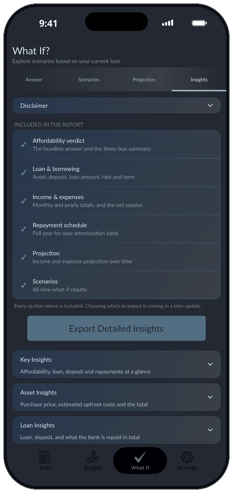
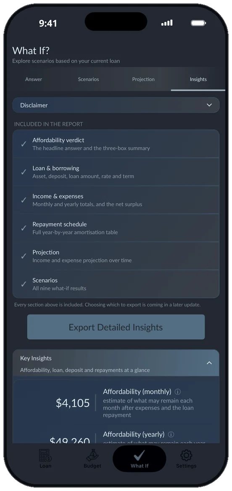
4. The PDF report: keep it, share it, bring it to the bank
A lender, broker, partner or adviser will want the numbers, not the app. The PDF is a complete record of your plan: the figures you entered, the results, and the whole repayment schedule, in a document you can save, print or send.
How to export
- Open What If and tap Export Detailed Insights (on the Insights tab, or the card at the bottom of Answer).
- The app builds the report. This can take several seconds; a progress message shows while it works.
- The standard iOS share sheet opens. Choose Preview to read it, Save to Files to keep it, or share it by mail or message.
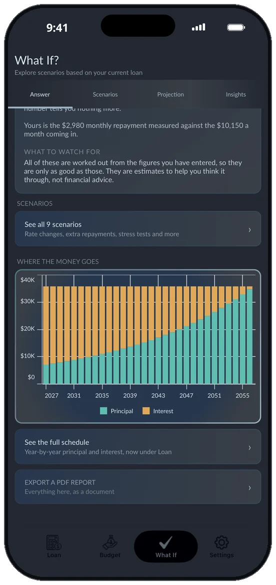
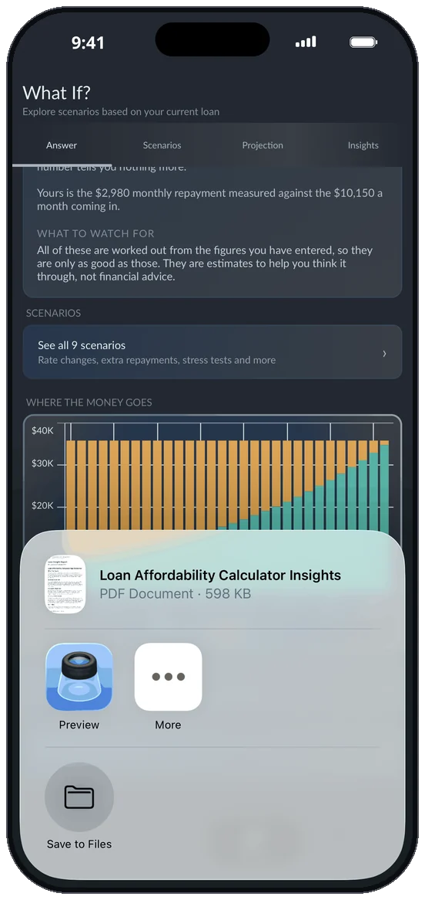
What is in the report
A 13-page report for this example. Every figure in it comes from what you entered, so check the Loan and Budget tabs are up to date first.
- Disclaimer (pages 1 to 3) – the same notice you accepted on first run.
- Key Insights (page 4) – affordability, loan, total repayment, term payment, income and expenses at a glance.
- Asset Insights (page 5) – asset price, each upfront cost listed, and the total asset cost.
- Loan and Amortisation (pages 6 to 8) – loan amount, deposit, total repayment, total interest, rate, frequency, and the full year-by-year schedule.
- Your Expenses (pages 9 to 11) – repayments, asset costs and every spending category in weekly, fortnightly, monthly and yearly terms, with the share each takes.
- Your Income (pages 12 and 13) – each source, and the income left after expenses and the new loan.
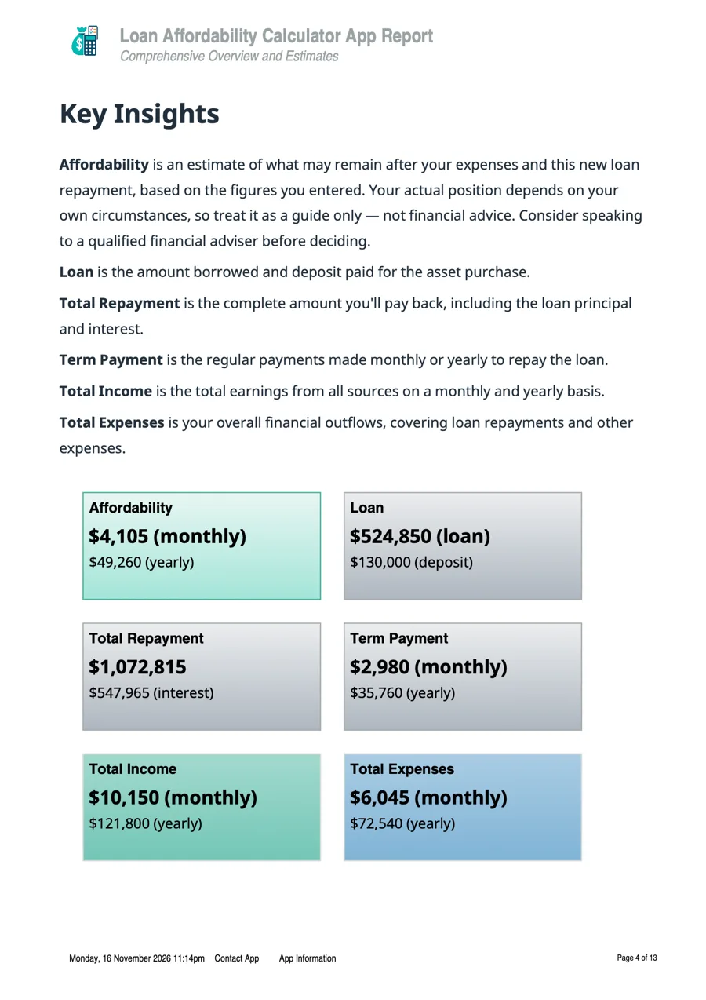
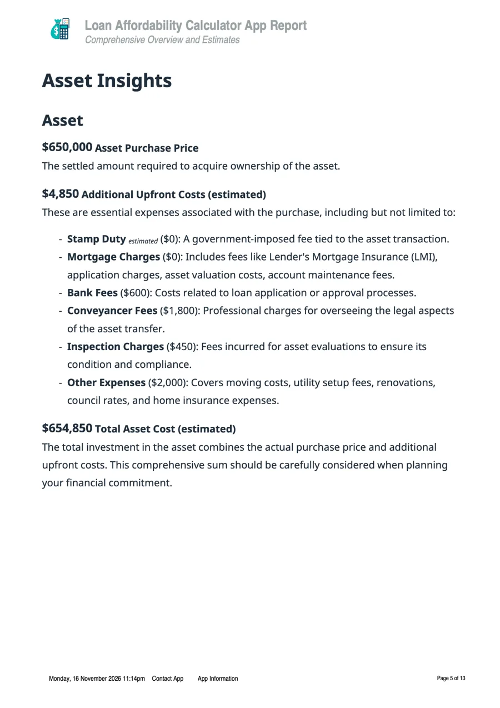
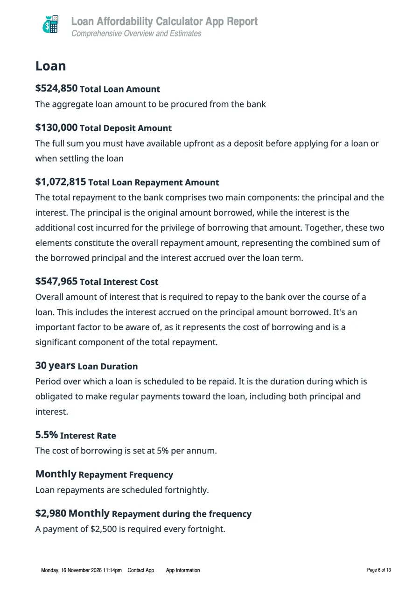
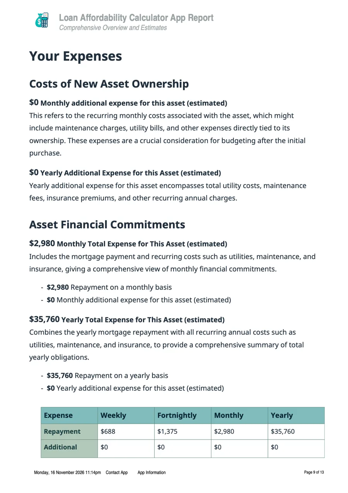
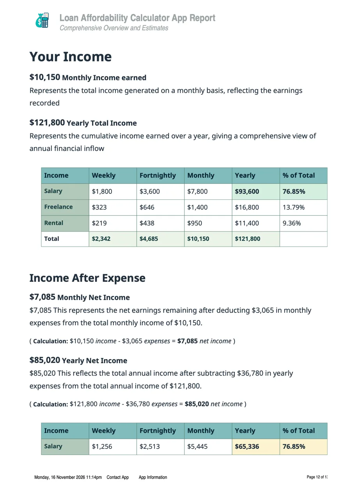
Exports include whatever is on the Budget tab at that moment. Review your entries for names or amounts you would not want to share before sending the file to anyone.
5. Settings: make the app yours
Everyone reads numbers differently. Settings controls how the app looks and how fast the controls move, and it is where you can erase what the app has stored.
Theme, font, text size and currency

- Theme – Dark, Light, Forest or Warm. Applies instantly everywhere.
- Font – eight typefaces, from clean sans-serif to serif and display styles.
- Text size – Small, Default, Large or XL, for easier reading.
- Currency – the symbol shown on every figure. It changes the symbol only; amounts are not converted.
Step sizes and defaults
Set how far each − / + tap moves things: loan interest rate (0.05% by default), the what-if rate (0.25%), monthly repayment, lump sum and offset balance. Smaller steps give fine control; larger steps make big changes quick. What If defaults and Calculator defaults set the starting values for scenarios and the limits for the calculator.
Support
Re-read the disclaimer and privacy policy, share the app, send feedback, or restore a purchase if you have bought the full version on another device.
Delete your data
Your figures are stored only on your device. Under Delete your data you can remove loan, income or expense records, or everything, at any time. Deleting removes them from the screens straight away, so the Loan and What If tabs will no longer use them.
Good to know
- Is my data uploaded anywhere? No. It stays on your device.
- Are the results financial advice? No. They are estimates; a lender's figures will differ. Talk to a qualified adviser before you borrow.
- Why does the loan include my upfront costs? Costs are folded into the loan so your deposit stays equal to the money you actually have.
- I changed my income and the answer did not change. Open the What If tab again; it refreshes each time you arrive.
- Why does the repayment on my lender's quote differ? Lenders may compute interest daily, add fees, or round differently. Use the figures here to compare options, then confirm with your lender.
- Where do I start if I only have five minutes? Loan (asset and deposit), then Budget (income and spending), then the Answer tab.
Estimates only; this app does not provide financial advice.